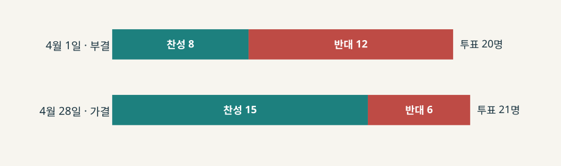
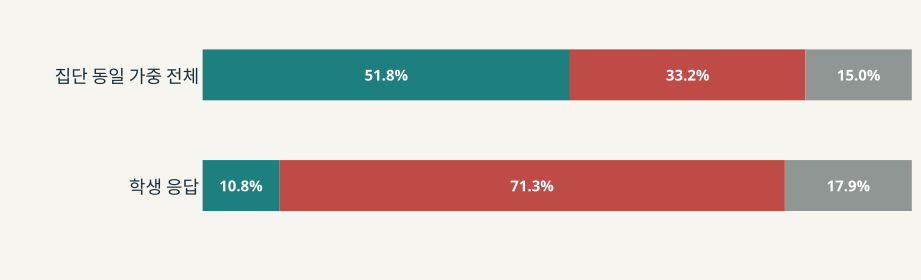

결정의 진전과
이해관계자 수용
강원대 통합안 재심의 · 동덕여대 공학 전환 공론화
반대 집단의 수용은 따로 확인해야 한다.
미래 전략은 현재 구성원의 삶을 바꾼다
강원대 · 강릉원주대
추진 이유 글로컬대학 통합 모델과 캠퍼스 특성화
걸린 이해관계 전략실·캠퍼스 인력, 학과와 캠퍼스 위상
위기의 표지 2월 심의 보류, 4월 통합안 부결
동덕여대
대학의 설명 경쟁 위기 속 지속 가능한 발전 검토
걸린 이해관계 여성교육 정체성, 입학 당시의 학업 환경, 학생 의견의 영향력
위기의 표지 2024년 점거, 2025년 공론화 이의와 학생 총투표
분석 질문: 대학의 미래 결정을 추진하면서 반대자의 요구를 얼마나 반영해야 공식 결정과 관계를 함께 관리할 수 있는가?
김동우 외(2025)의 다른 통합대학 직원 연구는 배치·보상 불안의 중요성을 보여준다. 이 논문을 강원대 현장 증거로 사용하지 않는다.
무엇을 지켰고, 무엇을 바꿨는가?
대응 뒤의 결과를 세 가지로 나누어 판정한다.
| 01 공식 결정 | 심의·권고·학칙 등 정해진 의사결정은 진전했는가? |
|---|---|
| 02 요구 반영 | 반대자가 요청한 내용·절차 가운데 실제로 무엇이 달라졌는가? |
| 03 반대 집단 수용 | 결정 이후 반발·합의·관계 변화가 무엇으로 확인되는가? |
이 기준은 발표자의 평가 틀이다. 강원대의 법정 평의원회 표결과 동덕여대의 공론화 권고를 같은 찬성률로 비교하지 않는다.
소통의 형식보다 조직의 입장을 본다
대상특정 시점, 특정 공중에 대한 조직의 입장. 설명회와 설문은 입장을 보여주는 단서일 뿐이다.
상황변수긴급성, 요구의 특성, 공중의 영향력, 위협과 선택의 예상 비용·편익.
수용의 한계서로 다른 공중의 요구가 충돌하면 한쪽의 요구를 모두 받아들이기 어렵다.
별도 결과조직이 수용적으로 행동해도 의결 통과나 반대자의 수용이 자동으로 생기지 않는다.
원전은 주로 기업과 외부 공중을 연구했다. 대학 내부 구성원에 대한 적용은 문서 기반의 탐색적 해석이다.
4월 부결 전에 절차 이의가 쌓였다
2023.11두 대학, 글로컬대학 통합 모델로 선정
2025.02.28257쪽 자료 이틀 전 송부·선제출 이의 → 심의 보류
04.01직원 배치·캠퍼스·학과 쟁점 → 8:12 부결
04.10–28보완안 설명·재심의 → 15:6 가결
05.28–2026.03교육부 승인, 통합 강원대 출범

두 표결의 참여 인원은 20명과 21명이다. 같은 의원이 몇 표를 바꿨는지는 확인되지 않는다.
통합 방향은 지키고 인력 구성은 조정했다
| 쟁점 | 본부가 취한 대응 | 남은 이의 |
|---|---|---|
| 4월 1일 반발 | 총장, 직원협의체가 참여하는 실무추진단과 조직·인력 수정 가능성을 설명 | 당일 신청서 8:12 부결 |
| 전략실 인력 | 4월 28일 본부 설명: 공무원 35→24명, 외부 전문가 0→11명. 총 35명 유지, 공무원 11명은 춘천에 잔류 | 업무분장과 실제 배치까지 확인해야 한다는 직원 평의원 질의 |
| 조직 권한 | 전략실의 과 명칭·역할 조정. 통합 총장의 권한과 전략실 큰 틀은 유지 | 부의장은 신청서 본문 변경이 경미하다고 비판 |
| 재심의 절차 | 평의원회 의장이 일정 지연을 들어 당일 새 수정 제안 접수를 제한 | 학생 평의원은 충분한 자료·수정 기회를 요구 |
35→24+11은 본부가 설명한 인력 구성안이다. 부의장은 신청서 본문 변경은 명칭 중심이라고 반박했다. 안건 전문 대조와 실제 배치는 미확인이다.
부분 조정은 의결을 넘겼지만 반발은 남았다
| 원전 변수 | 자료에서 확인한 조건과 실제 선택 | 해석과 반론 |
|---|---|---|
| 요구 특성 | 춘천 인력 공백 우려에 공무원 11명 잔류·외부 전문가 11명 대체안을 설명 | 부분 수용. 다만 업무분장과 수정 폭을 직원 측이 계속 문제 삼음 |
| 공중 영향력 | 평의원회가 4/1 신청서를 부결하자 본부가 보완안을 같은 기구에 재상정 | 제도적 압력. 의원별 표 변화의 이유는 알 수 없음 |
| 긴급성·상충 | 의장은 추가 수정 시 최대 28일 지연을 언급. 본부는 강릉원주대의 전략실 축소 요구도 설명 | 조정 범위 제한 가능성. 의장의 판단을 본부의 동기로 바꿔 읽지 않음 |
잠정 중단 뒤 공론화로 결정을 다시 추진했다
| 2024.11 | 공학 전환 사전 협의 논란·점거. 11/21 논의 잠정 중단과 수업 재개에 합의 | 이전 갈등 |
|---|---|---|
| 2024.12–2025.06 | 대학 보고서상 공론화 구성 합의. 교원·학생·직원·동문 각 3명으로 위원회 출범 | 절차 설계 |
| 2025.07–10 | 두 차례 온라인 조사, 48명 숙의기구, 406명 타운홀 | 의견수렴 |
| 11.26–12.02 | 학생위원 반대로 의결 보류. 세 안 표결 끝에 공학 전환 권고 9:2:1 | 권고 |
| 12.03–09 | 총장, 2029년 전환 추진 방침. 학생 총투표 3,470표 중 2,975표 반대 | 반발 지속 |
| 2026.01–08 | 학칙 개정 심의·시행 공고. 신임 총장도 2029년 준비를 언급 | 후속 결정 |
2024년 잠정 중단은 별도 갈등 국면의 부분 완화다. 핵심 분석은 2025년 공론화와 2026년 후속 절차다.
참여 폭은 넓었지만 전환 방향은 유지됐다
위원회4집단 각 3명. 학생위원의 이의로 11/26 의결을 미루고 12/2 대안 3개를 표결했다.
최종 온라인 조사교원·학생·직원 3집단 동일 가중. 2029~2030년 전환 조건에서 가중 전체 찬성 51.8%, 학생 응답의 여대 유지 71.3%.
받아들인 것학생 대안을 표결에 올리고 반대 의견 존중 문구를 보완했다.
유지한 것공학 전환 권고와 집단별 가중 규칙. 총장은 권고 다음 날 추진 방침을 밝혔다.

대학은 2029년이 권고문에 없던 추가 사항이라고 설명했다. 다만 2029~2030년 조건은 총장 발표 전 설문에도 있었다. 총투표 뒤 새 양보로 보지 않는다.
공론화의 진전과 학생 수용은 갈라졌다
| 원전 변수 | 자료에서 확인한 조건과 선택 | 해석과 반론 |
|---|---|---|
| 요구 특성·영향력 | 학생은 여대 유지·가중 조정·투표 반영을 요구. 위원회는 대안을 표결했지만 전환 권고 | 참여 수용, 핵심 방침 옹호. 학생 수가 많다는 이유만으로 최종 권한이 자동 이전되지는 않음 |
| 상충하는 공중 | 학생 응답은 여대 유지 우세, 다른 집단은 전환 찬성 우세. 대학은 동등 참여를 근거로 가중을 유지 | 완전 수용의 제약 가능성. 동등 가중이 유일한 공정 규칙이라는 증거는 아님 |
| 긴급성·비용 | 대학은 경쟁 위기와 불확실성 축소를 주장하며 권고 다음 날 방침 발표 | 신속성 중시 가능성. 총투표 완료 전 발표가 불가피했다는 근거는 없음 |
절차적 공정성과 신뢰의 관련성은 폴란드 학생 연구의 보조 설명이다. 동덕여대 반발의 단일 원인을 입증하지 않는다.
결정은 진전됐고 반대자의 수용은 남았다
| 동일 기준 | 강원대 · 강릉원주대 | 동덕여대 |
|---|---|---|
| 위기 징후와 시점 | 2/28 자료 지연 이의·보류. 4/1 부결 뒤 보완 | 2024년 점거 뒤 중단. 2025년 학생 반대 속 공론화 |
| 소통 방식 | 평의원회 질의·답변과 재심의 | 위원회·설문·숙의·타운홀·자료 공개 |
| 실질 조정 | 전략실 인력 구성 35→24+11 설명. 실제 배치는 미확인 | 문구·표결 일정 조정. 전환·가중은 유지 |
| 절차의 수용 | 법정 의결, 수정 폭·검토 시간에 이의 | 참여 폭 넓음, 대표성·발표 시점에 이의 |
| 공식 결정 | 재심의 가결·통합 출범 | 권고·학칙 진전, 2029 시행은 미래 |
| 반대 집단 관계 | 가결 직후 직원 항의. 장기 수용 불명 | 학생대표의 전환 반대 지속 |
판단: A는 인력 배치안이 더 구체적이고 D는 참여·공개가 더 넓다. 두 사례 모두 반대 집단 수용의 성과는 제한적이다.
경고를 아는 것과 미리 조정하는 것은 다르다
| 사례 | 위기 전에 보인 신호 | 조직의 인지·행동 | 가능했던 대응 제안 |
|---|---|---|---|
| 강원대 | 2/28 자료가 이틀 전 전달. 선제출·후심의 이의 | 기획처장 사과, 의장 심의 보류. 4월에도 자료 시점 비판 | 제출 전 변경표·인력 시나리오 공유, 직원·캠퍼스 업무분장 검토 |
| 동덕여대 | 2024년 반발, 2025년 학생의 여대 유지 선호와 11/26 이의 | 잠정 중단, 위원회 운영, 권고 의결 한 차례 연기 | 가중 규칙·권고 효력 사전 설명, 학생 투표 전 방침 발표 시점 재검토 |
Jaques의 조기 탐지와 이슈 대응은 연결되지만 같은 활동이 아니다. 두 대학 모두 징후를 인지한 기록이 있으므로 ‘모니터링이 없었다’고 말하지 않는다.
변경 범위와 수용 확인을 함께 설계해야 한다
01무엇을 바꿀 수 있는지 결정 전에 밝히고 변경 전후를 공개한다.
02참여 비율·집계 방식·최종 결정 권한을 절차 시작 때 설명한다.
03의결 뒤 반대 집단의 요구 반영과 수용을 별도로 확인한다.
평가 범위: A는 재심의·출범 성공과 직후 직원 반발, D는 공론화·학칙 진전과 학생대표 수용 미확보. A의 장기 수용과 D의 2029년 시행은 유보한다.
AI 사용: OpenAI Codex로 기존 원자료·문헌 대조, 분석 문서와 슬라이드 초안 제작을 보조했다. 발표자는 원문 근거와 최종 해석을 확인해야 한다.